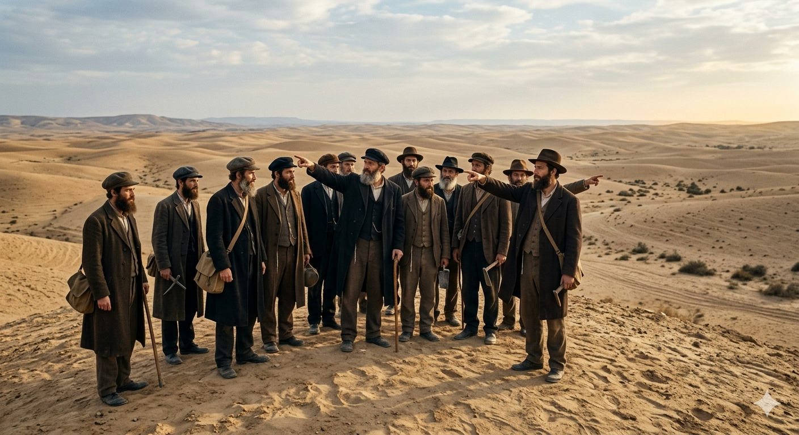
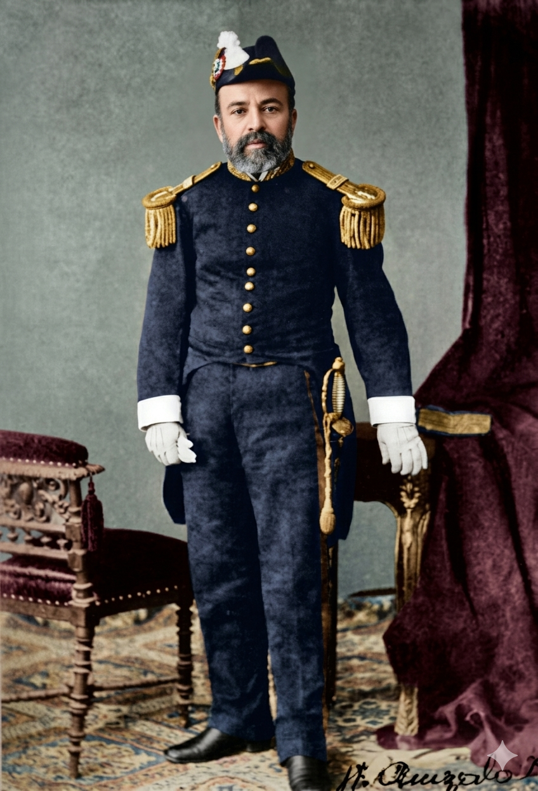
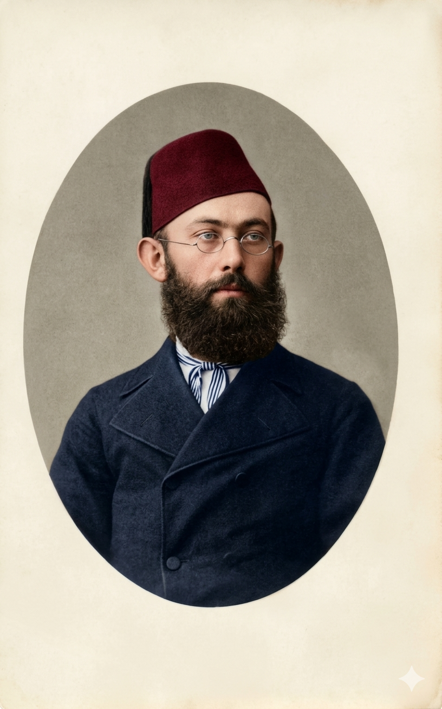
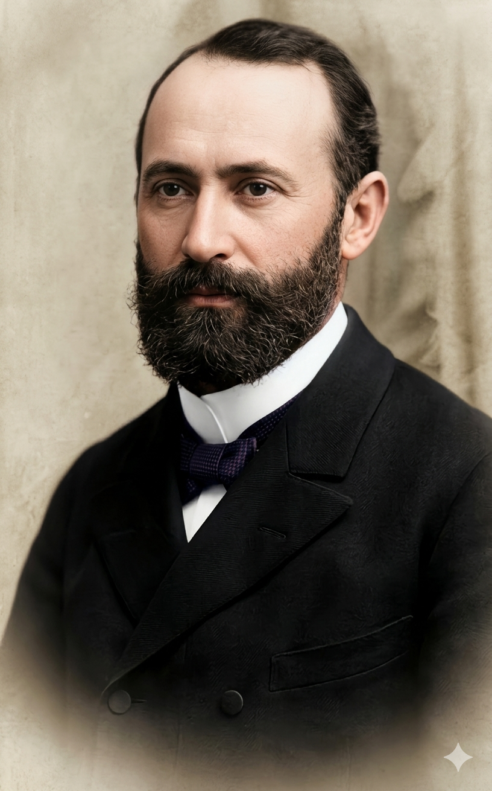
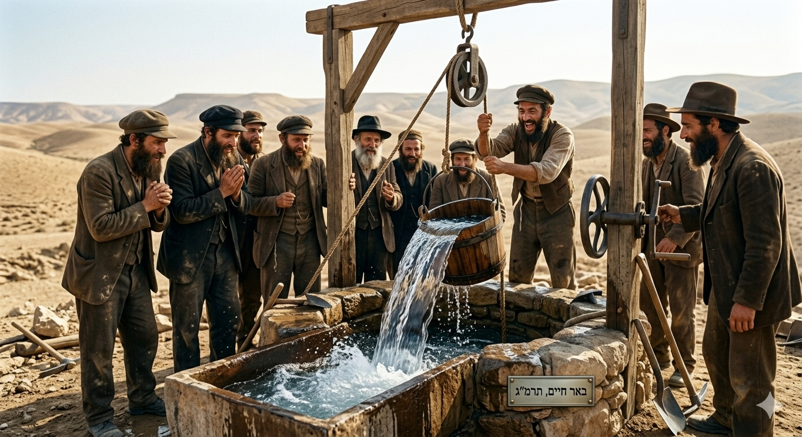
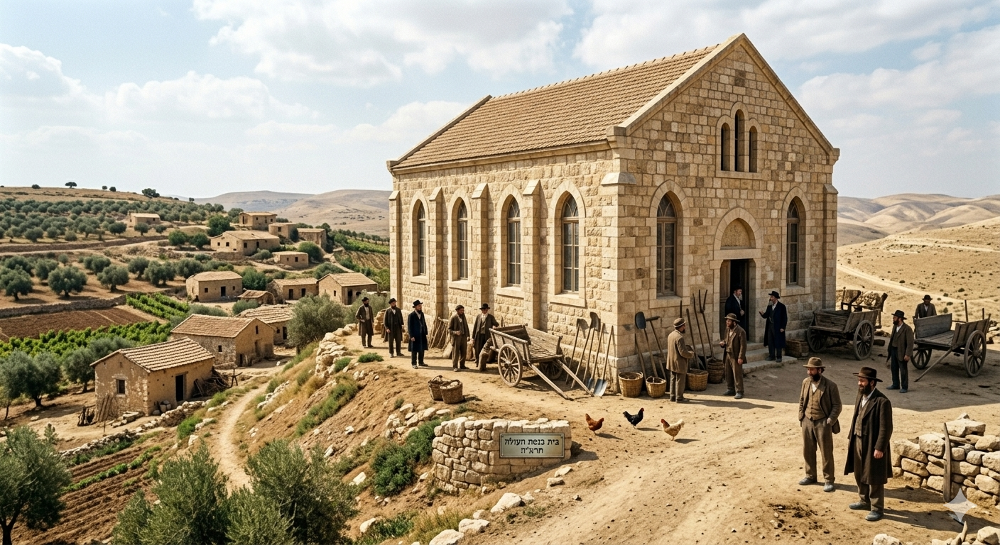
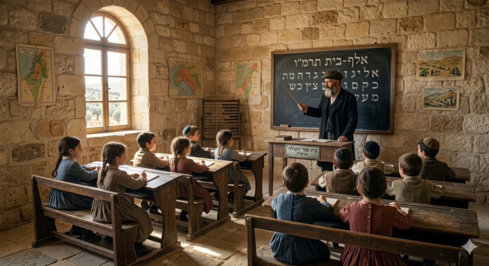
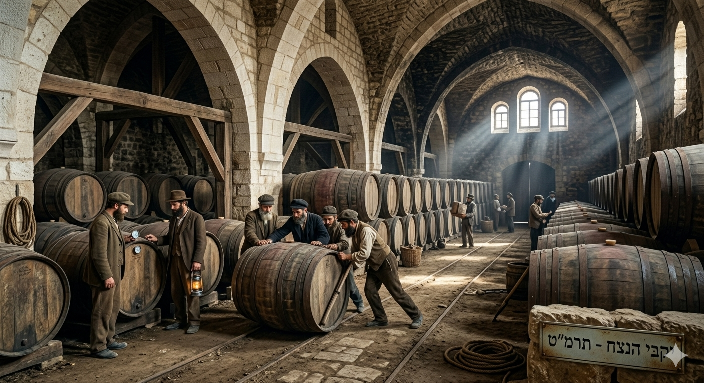

תעודת זהות היסטורית
שנת בנייה/הקמה: 1882 (תרמ"ב).
הוגים ובונים (יזמים): "ועד חלוצי יסוד המעלה" בראשות זלמן דוד ליבונטין, יחד עם יוסף פיינברג, ובתמיכתו הדיפלומטית והמעשית של חיים אמזלאג. (17 משפחות מייסדים).
סיבת ההמצאה/הבנייה:
בעקבות פרעות "הסופות בנגב" (1881) ברוסיה, התעורר גל לאומי (חובבי ציון). המייסדים ביקשו להקים יישוב חקלאי שיתופי בארץ ישראל, שיהווה דוגמה לעצמאות יהודית, לעבודת אדמה כערך עליון, ולחידוש החיים הלאומיים.
ניתוח אטימולוגי מקיף לשם המושבה
את השם "ראשון לציון" קבע המייסד זלמן דוד ליבונטין. בדומה לפתח תקווה, השם אינו מקרי אלא לקוח ישירות מהתנ"ך, במטרה לשקף את מהות המפעל: חזרת עם ישראל לארצו. השם נגזר מנבואת הנחמה של ישעיהו.
"רִאשׁוֹן לְצִיּוֹן הִנֵּה הִנָּם; וְלִירוּשָׁלִַם מְבַשֵּׂר אֶתֵּן."
(ישעיהו מ"א, כ"ז)
החלק הראשון: רִאשׁוֹן
המשמעות המילולית: ההתחלה, הפותח, מי שקודם לאחרים.
ההקשר הרעיוני למייסדים: למרות שפתח תקווה נוסדה קודם (ב-1878) וננטשה, מייסדי ראשון לציון, עולי העלייה הראשונה, ראו עצמם כחלוצים ה"ראשונים" של התנועה הלאומית הממוסדת ("חובבי ציון") המיישמים הלכה למעשה את שיבת ציון המודרנית.
החלק השני: לְצִיּוֹן
המשמעות המילולית: כינוי פיוטי והיסטורי לירושלים, להר ציון, ובאופן מורחב – לארץ ישראל כולה.
ההקשר הרעיוני למייסדים: המילה מחברת את המפעל לחזון הלאומי העתיק. המייסדים הם הבשורה (ה"מבשר") של התחייה הלאומית, המגיעים לציון כדי לבנות אותה מחדש והולכים לפני המחנה.

אספת המייסדים (1882)
תיאור היסטורי: חלוצי "ועד חלוצי יסוד המעלה" סוקרים את אדמת החול השוממה של "עיון קרא" טרם רכישתה.
סיפור רכישת הקרקע: אדמת עיון קרא והסיוע הדיפלומטי
לאחר התארגנות "ועד חלוצי יסוד המעלה" ביפו, בראשותו של זלמן דוד ליבונטין, החל חיפוש קדחתני אחר קרקע מתאימה. הוועד חיפש שטח שיהיה גדול מספיק להקמת מושבה ורחוק מביצות כדי להימנע מגורל דומה לזה של פתח תקווה. ההזדמנות הגיעה כאשר הוצע להם שטח של כ-3,340 דונם דרומית-מזרחית ליפו, באזור שנקרא בערבית "עיון קרא".
התערבותו הקריטית של חיים אמזלאג: באותם ימים, האימפריה העות'מאנית הוציאה גזירות מחמירות שאסרו על יהודים ממזרח אירופה (רוסיה ורומניה) לרכוש קרקעות ולהתיישב בארץ ישראל. הוועד עמד בפני שוקת שבורה. כאן נכנס לתמונה חיים אמזלאג, בן למשפחה ספרדית ותיקה ביפו אשר שימש כסגן קונסול בריטניה. מתוקף תפקידו הדיפלומטי ואזרחותו, חוקי הסולטן לא חלו עליו באותה המידה. אמזלאג התגייס למשימה, רכש את הקרקע מהאחים מוסטפא ומוסא אל-דג'אני ורשם אותה כדין על שמו שלו בטאבו. מיד לאחר מכן, חתם על הצהרה סודית המעבירה את זכויות השימוש והבעלות בפועל לידי ליבונטין והמתיישבים, ובכך "הלבין" את הרכישה ואיפשר את העלייה לקרקע.
דמויות מפתח בהקמה: פרופילים ביוגרפיים
חיים אַמְזָלָאג 1828 – 1916

ילדות ורקע:
נולד בגיברלטר (מה שהקנה לו אזרחות בריטית חשובה) למשפחת סוחרים ממוצא מרוקאי-ספרדי שעלתה לארץ והתיישבה בירושלים. הוא גדל באווירה רב-תרבותית, שלט במספר שפות (כולל ערבית וצרפתית), ועבר להתגורר ביפו שם בנה לעצמו מעמד רם כסוחר בינלאומי עשיר, בנקאי, ומאוחר יותר כסגן הקונסול הבריטי.
אידאולוגיה וחזון:
אמזלאג ייצג את יהדות ספרד הוותיקה בארץ, שראתה בעולים החדשים ממזרח אירופה ("האשכנזים") אחים לצרה ולחזון. למרות מעמדו הבטוח בחברה הערבית והטורקית ביפו, האידאולוגיה שלו דחפה אותו להשתמש בהשפעתו, בכספו ובקשריו הדיפלומטיים כדי להגן על המתיישבים החדשים ולסייע בגאולת הארץ, גם תוך נטילת סיכון פוליטי אישי מול הרשויות הטורקיות.
הישגים מרכזיים:
- רכישת אדמות עיון קרא על שמו, מה שאיפשר מבחינה חוקית את הקמת ראשון לציון.
- סייע בבניית המבנים הראשונים במושבה, כולל הסוואת בניית בית הכנסת הגדול.
- היה מעורב בהקמת היישוב העברי ביפו (נווה צדק) וסייע גם למושבות אחרות כמו פתח תקווה.
זלמן דוד לִיבוֹנְטִין (זד"ל) 1856 – 1940

ילדות ורקע:
נולד בעיירה אורשה ברוסיה (היום בלארוס) למשפחת סוחרים. זכה לחינוך יהודי מסורתי אך גם השתלם בלימודים כלליים. הוא עבד כפקיד בנק בקרמנצ'וג, שם רכש ידע פיננסי עצום שהפך אותו לאחד הכלכלנים הבולטים של התנועה הציונית בראשיתה.
אידאולוגיה וחזון:
ליבונטין האמין שהתיישבות חייבת להישען על יסודות כלכליים ומסחריים בריאים, ולא רק על חזון רומנטי. הוא ייסד את "ועד חלוצי יסוד המעלה" מתוך תפיסה שהעלייה לארץ חייבת להיות מאורגנת, חוקית, ומגובה בהון שירכוש קרקעות כדי להקים מושבות חקלאיות מודרניות.
הישגים מרכזיים:
- הוגה הרעיון, המייסד והמנהיג של "ועד חלוצי יסוד המעלה" שהוביל לרכישת אדמות עיון קרא והקמת ראשון לציון. טבע את שמה של המושבה.
- לימים, היה ממייסדי בנק אפ"ק (אנגלו-פלשתינה), שהפך לימים לבנק לאומי לישראל, ובכך הניח את התשתית הכלכלית למדינה שבדרך.
יוסף פיינברג 1855 – 1902

ילדות ורקע:
נולד בסימפרופול שבחצי האי קרים. הוא היה נציג מובהק של האינטליגנציה היהודית-רוסית: למד כימיה באוניברסיטאות מינכן וציריך, ושלט בשפות רבות. פרעות הסופות בנגב זעזעו אותו וגרמו לו לזנוח את עתידו האקדמי באירופה לטובת העלייה לארץ.
אידאולוגיה וחזון:
פיינברג שילב חשיבה מדעית מודרנית עם להט לאומי. הוא האמין שיש לבסס את ההתיישבות על מחקר וידע מדעי, ולא רק על כוח פיזי. בשל שליטתו בשפות ורהיטותו, שימש כדובר וכדיפלומט של המתיישבים, מתוך אמונה שההתיישבות דורשת גב וקשרים בינלאומיים.
הישגים מרכזיים:
- היה שותפו הקרוב של ליבונטין ברכישת אדמות עיון קרא.
- "שליח ההצלה": כאשר המושבה קמלה מצמא בחורף הראשון, נשלח לפריז. דרך קשריו הוא הצליח להגיע אל הברון אדמונד דה רוטשילד ולשכנעו לתמוך במושבה (מפגש היסטורי שהציל את הפרויקט הציוני כולו).

מציאת המים (פברואר 1883)
תיאור היסטורי: הרגע הדרמטי של פריצת המים מעומק 48 מטרים, בסיוע כספו של הברון רוטשילד.
ממשבר לשגשוג: ציר זמן ומוסדות עוגן
1882: העלייה לקרקע, צימאון וההיכרות עם הברון
ביולי 1882 מקימות המשפחות הראשונות אוהלים על גבעת החול. מיד מתבררת חומרת הבעיה: אין מים. החפירות הידניות נכשלות, הכסף אוזל והייאוש גובר. יוסף פיינברג נשלח לפריז במטרה כמעט אבודה למצוא תורם. שם, מתרחש הנס: פיינברג מצליח לקבוע פגישה עם הרב צדוק כהן, רבה הראשי של צרפת ואיש סודו של הברון אדמונד דה רוטשילד. הרב כהן, שהתרשם עמוקות מנחישותו של פיינברג, מסדר לו פגישה היסטורית עם הברון הצעיר. הפגישה הזו משנה את ההיסטוריה – הברון לוקח את ראשון לציון תחת חסותו (כמושבה הראשונה שלו), נותן הלוואה מיידית להמשך החפירות הנדסיות, ובפברואר 1883 נשמעת הקריאה "מצאנו מים!".
1883 ואילך: תרומתו האדירה של הברון רוטשילד
חסותו של הברון רוטשילד לא הסתכמה רק במציאת מים. הברון ("הנדיב הידוע") הזרים הון עתק למושבה. הוא כונן את "משטר הפקידות" – הוא שלח פקידים, אגרונומים ורופאים מצרפת שניהלו את המושבה מבחינה מקצועית וכלכלית (לעיתים תוך חיכוך תרבותי קשה עם האיכרים העצמאיים). הברון מימן את הבתים הראשונים, רכש עוד ועוד אדמות, הקים מערכת בריאות, וחשוב מכל – שינה את ייעוד המושבה מפלחה (גידול תבואה) למטעים מניבים, בעיקר גפנים, במטרה לבסס כלכלה משגשגת שלא תהיה תלויה בגשם בלבד. ללא התערבותו המקיפה, ספק רב אם המושבה הייתה שורדת.
1885–1889: הקמת בית הכנסת הגדול
מוסד דתי ולאומיבית הכנסת היה לב ליבה של המושבה. אולם, השלטון העות'מאני אסר באיסור חמור בנייה של מבני דת יהודיים חדשים. כיצד נבנה בית הכנסת הגדול בראש העמדה הגבוהה ביותר במושבה? בערמה ותושייה. המייסדים פנו לחיים אמזלאג שחילץ רישיון לבניית "מחסן לציוד חקלאי". הם החלו לבנות את קירות ה"מחסן", וכדי להימנע מעיני פקחים, עבדו במהירות, לעיתים בלילות. כשהגיע פקיד טורקי ושאל מדוע יש חלונות מעוגלים במחסן, נענה בתשובה כי הדבר נועד לאוורור הציוד. בסופו של דבר הוקם מבנה אבן מפואר, שהפך למרכז החיים הציבוריים של המושבה ולסמל של ריבונות רוחנית עברית.

1886: הקמת "בית ספר חביב"
מוסד חינוכי מהפכניראשון לציון חקקה את שמה בהיסטוריה העולמית כשהקימה את בית הספר העברי הראשון בעולם, שלימים נקרא "חביב" (ע"ש דוד חיים לובמן חביב). עד אז, למדו ילדים ארץ ישראל ב"חדר" בשפת היידיש או בבתי ספר של כי"ח בצרפתית. מורים דגולים כדוגמת דוד יודלביץ' ומרדכי לובמן, בהדרכתו הרוחנית של אליעזר בן-יהודה, החליטו שכאן כל המקצועות – מחשבון ועד התעמלות – ילמדו בעברית בלבד (שיטת "עברית בעברית"). הדור שצמח מבית הספר הזה היה הדור הראשון שדיבר עברית כשפת אם טבעית ויומיומית, והפיץ את הבשורה לשאר הארץ.

1889 ואילך: יקבי כרמל (כרמל מזרחי)
המהפכה התעשייתיתהברון רוטשילד הבין שגידולי פלחה רגילים לא יפרנסו את המושבה בטווח הארוך. כמומחה ליין בצרפת (בעלי "שאטו לאפיט"), הוא שלח מומחים לבדוק את טיב הקרקע, ואלו קבעו שאדמת האזור מתאימה במיוחד לגידול גפנים. בשנת 1889 הורה הברון על בניית מפעל התעשייה הגדול והמודרני ביותר בארץ ישראל עד לאותה עת – היקב בראשון לציון. המרתפים העמוקים נחפרו להבשלה, הובא ציוד טכנולוגי מתקדם, והוקמה אגודת הכורמים "כרמל מזרחי". היקב סיפק עבודה למאות פועלים (ביניהם אנשי העלייה השנייה כמו דוד בן-גוריון שעבד בו תקופה קצרה כיקב מפריד), והפך לעוגן הכלכלי של כל מושבות יהודה באותה תקופה.

מקורות וביבליוגרפיה
- "ייסוד ראשון לציון" / זלמן דוד ליבונטין: ספר זיכרונותיו של מייסד המושבה, המתעד את הליך הרכישה, משבר המים והפנייה לברון.
- הברון רוטשילד וההתיישבות / אהרן אהרונסון: מקור היסטורי לניתוח השפעת פקידות הברון ויסוד יקבי כרמל.
- מוזיאון ראשון לציון: הארכיון המרכזי לתולדות המושבה, מוסדותיה (בית ספר חביב ובית הכנסת) ויצירת הסמלים הלאומיים.
- ספר ישעיהו, תנ"ך: פרק מ"א, פסוק כ"ז – המקור האטימולוגי והרעיוני לשמה של המושבה.